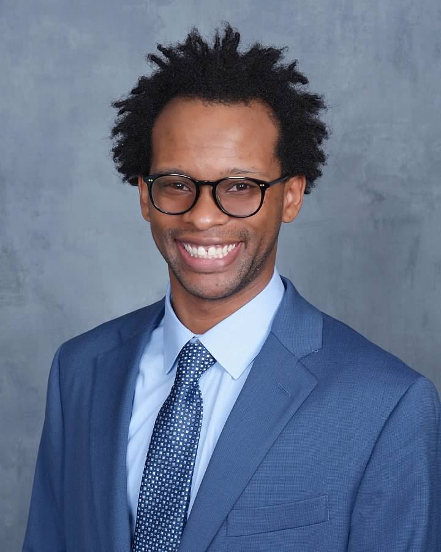
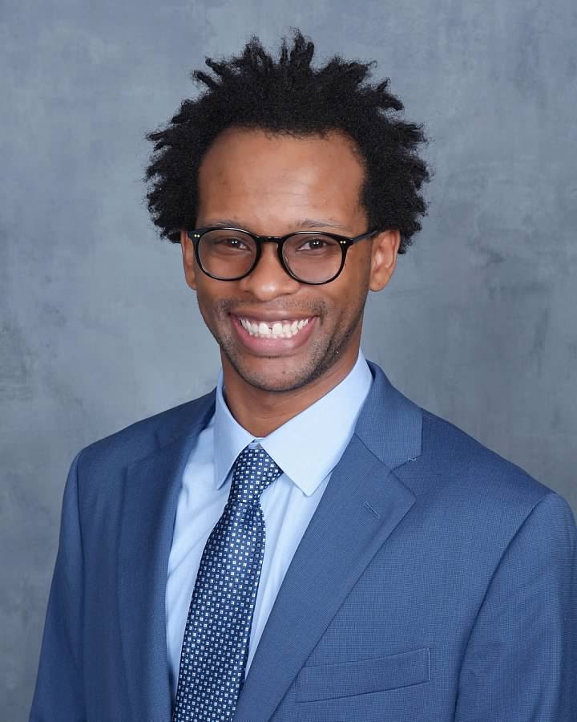

Current Gradute Students
Kalab M. Kiros, 2025 to present
Josiah Chuku, Summer 2025 to present
Sunday J. Awine, August 2025 to present
 Javonte L. Carter, August 2025 to present

Javonte L. Carter, August 2025 to present

Past Students
Undergradute Students
Sunday J. Awine, Spring 2025 to Summer 2025
Javonte L. Carter, Spring 2025 to Summer 2025
Awards and News
Congratulations to Allen Jones! He was selected to participate in the Data Science for Social Impact (DSSI) program at the University of Chicago in March 2025.